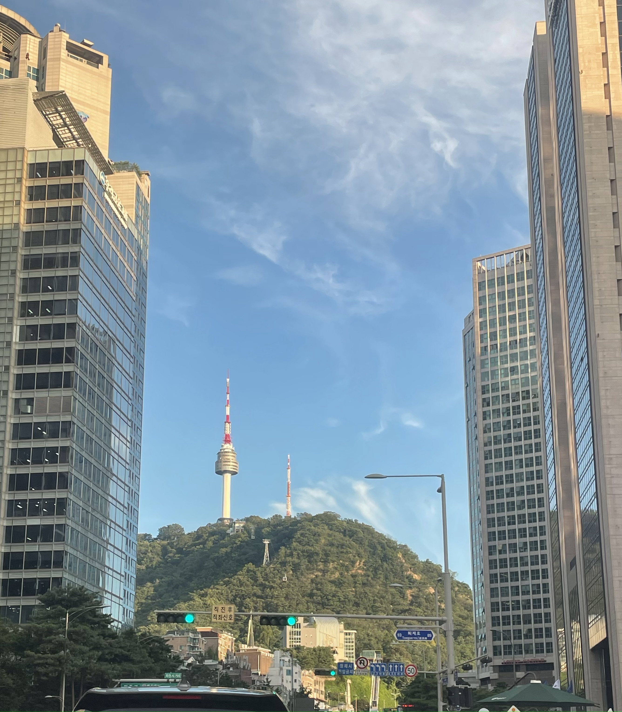

韓国デイ

日程：12月 15日 金曜日
当日のタイムテーブル
16：00 初めの言葉
16：03 土地について 場所、面積、大まかな説明 （担当）
16：15 セジョンとへウォンの住んでいる地域について（担当）
16：23 韓国の文化について（慣習、伝統、今の流行など）（担当）
16：30 有名な食べ物について（流行や発祥）
16：36 ファッションや音楽
16：42 言葉（読み方など）
16：50 クイズ
17：00 終わり
17：05 お店に向かう 電車で30分 徒歩で40分
18：00 〜 20：00 コリアンダイニングココ